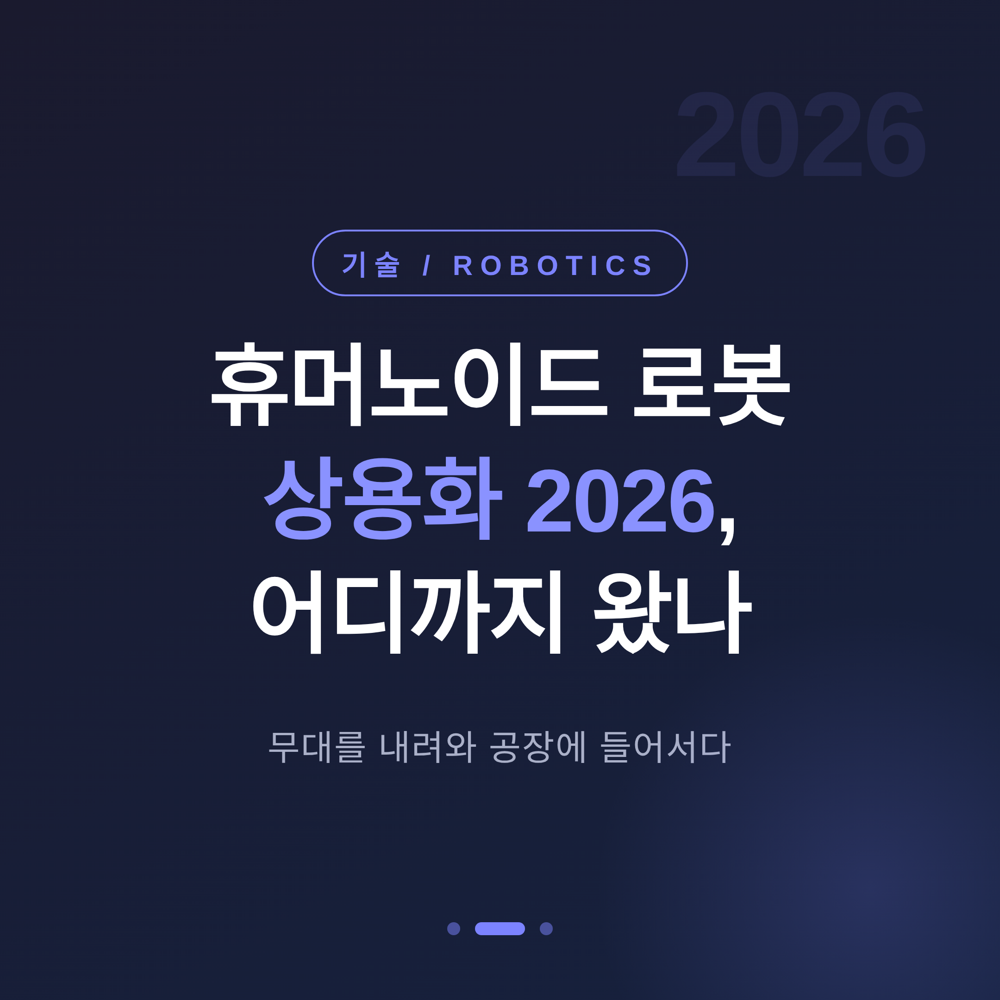
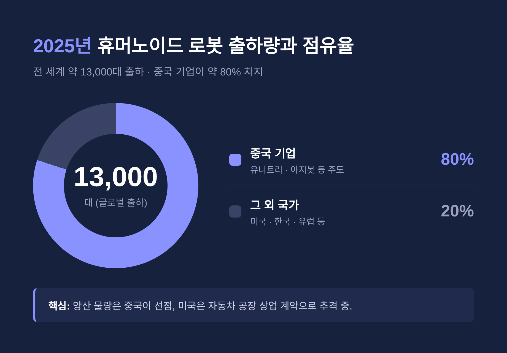
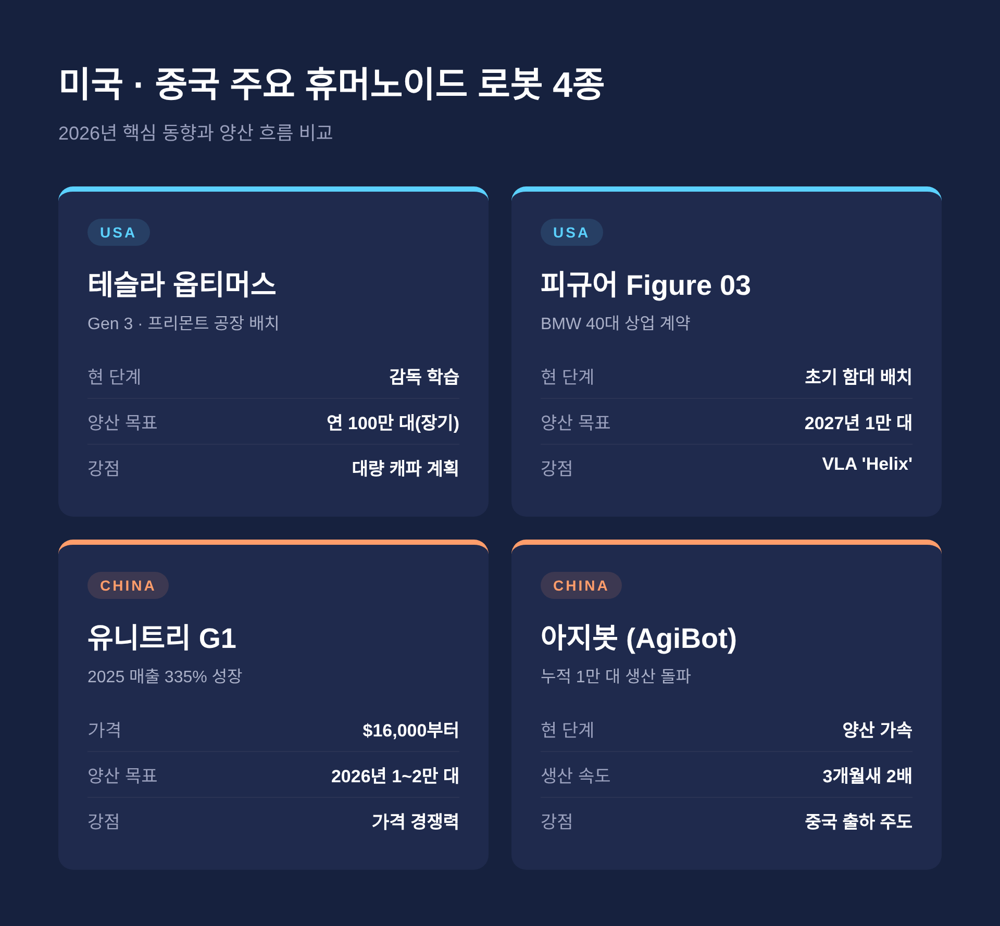
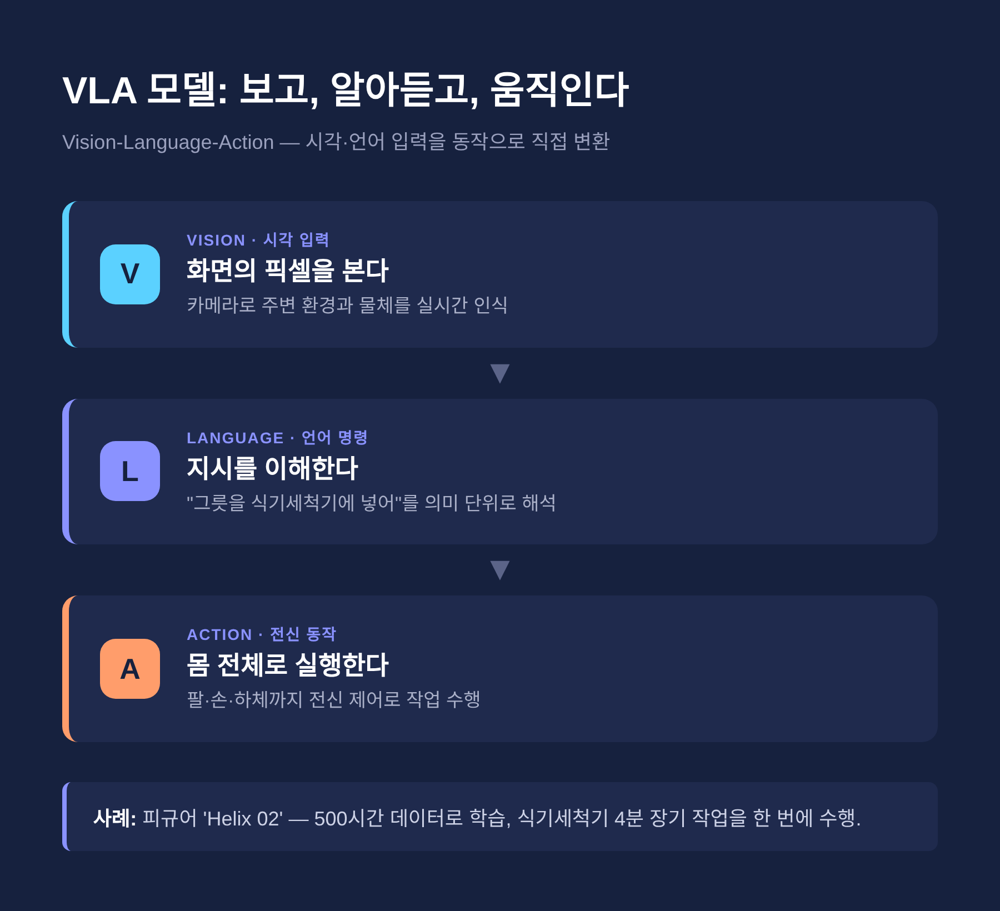
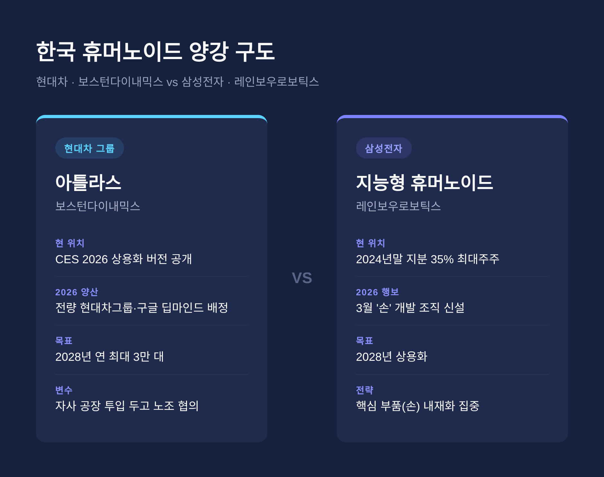

이번 글에서는 2026년 휴머노이드 로봇 상용화의 현주소를 정리해 보겠습니다.
어디까지가 현실이고, 어디부터가 아직 약속인지 차분히 짚어보려 합니다.
세 줄 요약
숫자 하나가 흐름을 보여줍니다.
2025년 전 세계 휴머노이드 로봇 출하량은 약 1만3,000대 수준이었습니다.
그중 약 80%를 중국 기업이 가져갔습니다.
예전엔 무대 위 시연 영상이 전부였습니다.
지금은 공장 라인에 들어가 실제 부품을 옮깁니다.
변화의 축은 세 가지입니다.
첫째, 자동차 공장 중심의 시범 운영이 상업 계약으로 넘어가기 시작했습니다.
둘째, 가격이 빠르게 내렸습니다.
셋째, 로봇의 '두뇌'에 해당하는 AI 모델이 전신 제어로 도약했습니다.

지금 경쟁은 미국과 중국을 중심으로 벌어집니다.
대표 주자들을 표로 정리합니다.
| 기업 / 모델 | 국가 | 2026년 핵심 동향 | 양산 목표 |
|---|---|---|---|
| 테슬라 옵티머스 | 미국 | 프리몬트 공장 Gen 3 배치, 감독 학습 단계 | 연 100만 대(장기) |
| 피규어 Figure 03 | 미국 | BMW와 40대 초기 함대 상업 계약 | 2026년 1,000대 → 2027년 1만 대 |
| 앱트로닉 아폴로 | 미국 | 구글·메르세데스 참여 5억2,000만 달러 조달 | 메르세데스·GXO 파일럿 |
| 보스턴다이내믹스 아틀라스 | 한국(현대차) | CES 2026 상용화 버전 공개 | 현대차 2028년 연 최대 3만 대 |
| 유니트리 G1 | 중국 | 2025년 매출 335% 성장, STAR마켓 IPO 통과 | 2026년 1만~2만 대 |
| 아지봇 | 중국 | 2026년 3월 누적 1만 대 생산 | 유니트리와 중국 출하 80% |
테슬라 옵티머스는 프리몬트 공장에 수백 대가 배치됐습니다.
다만 자율 생산이 아니라 사람이 가르치는 '감독 학습' 단계입니다.
연 100만 대라는 목표는 길게 본 캐파 계획으로 읽는 편이 합리적입니다.
피규어는 조금 더 앞서 있습니다.
Figure 02는 BMW 스파턴버그 공장에서 약 10개월간 하루 10시간씩 일했습니다.
이 기간에 X3 3만 대 이상 생산에 기여했고, 부품 9만 개 이상을 옮겼습니다.
이어 BMW와 Figure 03 40대 초기 함대 상업 계약을 맺었습니다.
중국의 속도는 다른 결입니다.
유니트리 G1은 1만6,000달러부터 시작합니다.
아지봇은 3개월 만에 누적 생산을 5,000대에서 1만 대로 끌어올렸습니다.

하드웨어보다 더 빠르게 움직이는 쪽은 소프트웨어입니다.
2026년 휴머노이드 지능의 핵심은 VLA 모델입니다.
시각 입력과 언어 명령을 곧바로 로봇 동작으로 바꾸는 신경망을 뜻합니다.
대표 사례가 피규어의 'Helix'입니다.
2026년 1월 공개된 Helix 02는 상체 제어를 넘어 전신 제어로 확장됐습니다.
약 500시간 분량의 시연 데이터만으로 학습했지만, 수천 개의 새 물체로 일반화했습니다.
시연 장면 하나가 상징적입니다.
실제 크기 주방에서 식기세척기에 그릇을 넣고 빼는 4분짜리 작업을 한 번에 해냈습니다.
'화면의 픽셀'을 보고 '전신 동작'으로 잇는 첫 장기 작업으로 평가됩니다.
구글 딥마인드의 Gemini Robotics 모델도 변수입니다.
앱트로닉 아폴로와 현대차 아틀라스의 차기작에 탑재될 예정입니다.

상용화의 문턱은 결국 비용입니다.
2026년 휴머노이드 가격은 약 1만6,000달러부터 15만 달러 이상까지 폭넓게 퍼져 있습니다.
상업용은 4만~6만 달러대로 수렴하는 흐름입니다.
뱅크오브아메리카 분석은 현실을 보여줍니다.
서구 공장에 들어간 휴머노이드는 1대당 9만~10만 달러 수준입니다.
다만 중국산 부품 기준 부품원가는 약 3만5,000달러에 가깝습니다.
현장의 최대 시험대는 자동차 제조입니다.
피규어는 BMW, 앱트로닉은 메르세데스, 보스턴다이내믹스는 현대차와 손잡았습니다.
물류와 항공으로도 번지고 있습니다.
에어버스는 2026년 1월 UBTECH 워커 S2를 항공 제조에 들이기로 합의했습니다.
한국의 두 축은 현대차와 삼성전자입니다.
현대차는 보스턴다이내믹스를 통해 가장 앞에 서 있습니다.
CES 2026에서 상용화 버전 아틀라스를 공개했습니다.
2026년 첫 양산 물량은 전량 현대차그룹과 구글 딥마인드로 배정됩니다.
다만 자사 공장 대량 투입을 두고 노조가 노동 협약 없는 배치를 막고 있다는 보도도 있습니다.
삼성전자는 레인보우로보틱스를 통해 움직입니다.
2024년 말 지분 35%로 최대주주에 올랐습니다.
2026년 3월에는 로봇의 핵심인 '손' 개발 조직을 따로 세웠습니다.
지능형 휴머노이드 상용화 목표 시점은 2028년으로 제시됩니다.

좋은 소식만 있는 것은 아닙니다.
한계는 분명합니다.
배터리가 첫 번째 벽입니다.
한 번 충전으로 2~4시간 남짓 움직입니다.
8시간 교대 근무에는 아직 못 미칩니다.
손재주도 숙련공을 따라가지 못합니다.
실을 꿰거나 깨지기 쉬운 물체를 다루는 일에서 여전히 서툽니다.
안전 표준은 더 근본적인 문제입니다.
2026년 5월 기준 미국 OSHA는 휴머노이드 전용 지침을 내지 않았습니다.
표준이 정비돼야 대규모 기업 조달의 문이 열립니다.
그래서 대부분의 배치는 여전히 '파일럿' 단계에 머뭅니다.
테슬라 옵티머스조차 자율 생산이 아니라는 점이 이를 잘 보여줍니다.
끝으로 한 마디만 더 드리겠습니다.
2026년의 휴머노이드 로봇은 무대를 내려와 공장에 들어섰습니다.
그러나 아직 사람의 자리를 대신하지는 못합니다.
"가능성은 증명됐고, 신뢰는 이제부터다."
몇 년 뒤 이 글을 다시 펼친다면, 그때는 '파일럿'이라는 단어가 사라져 있을지도 모르겠습니다.